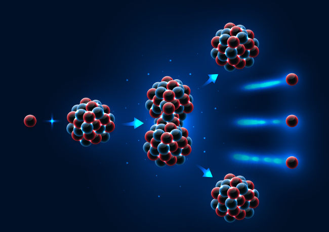
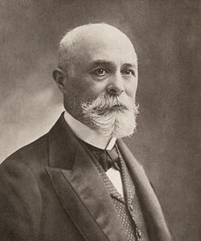
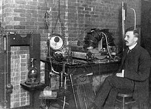
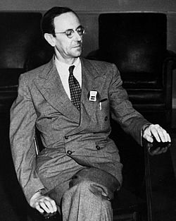
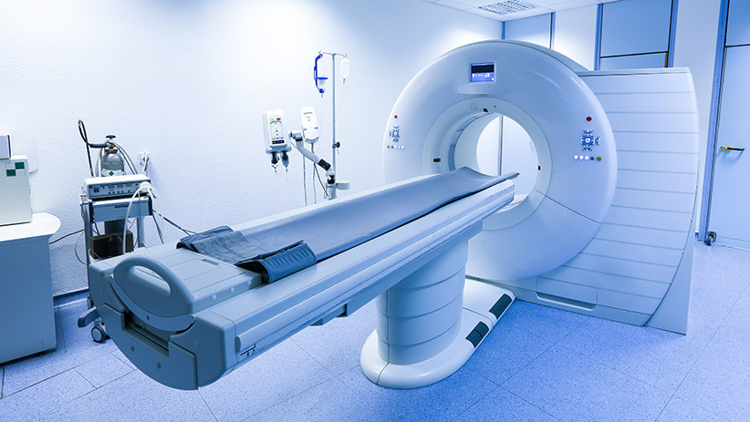
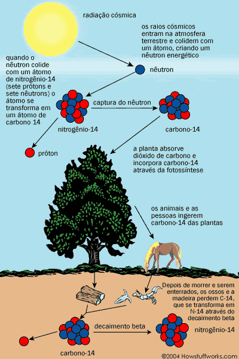
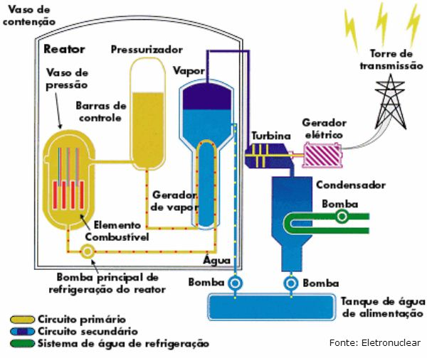
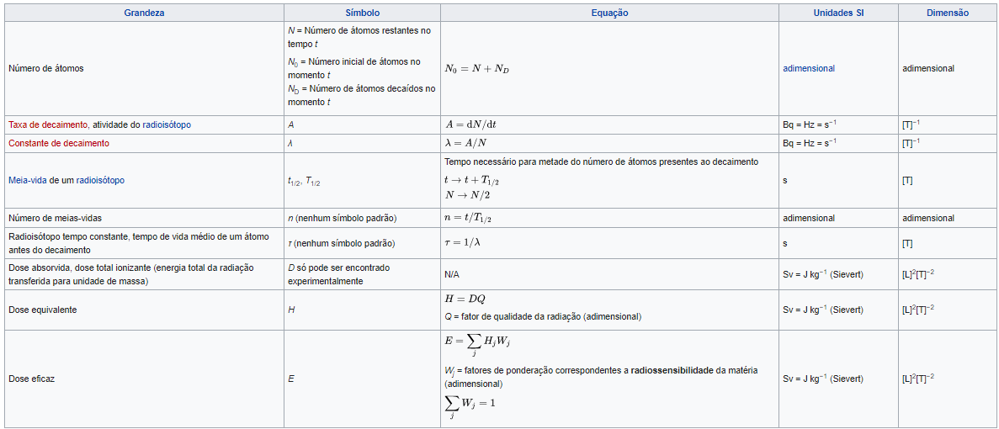
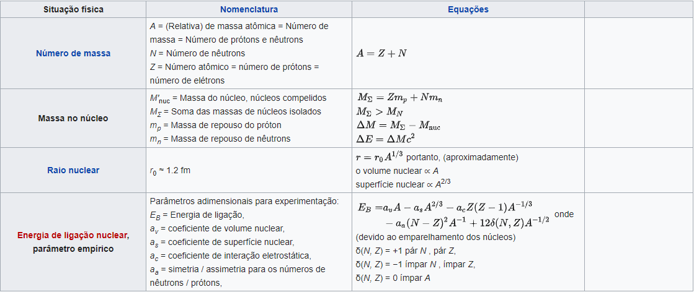
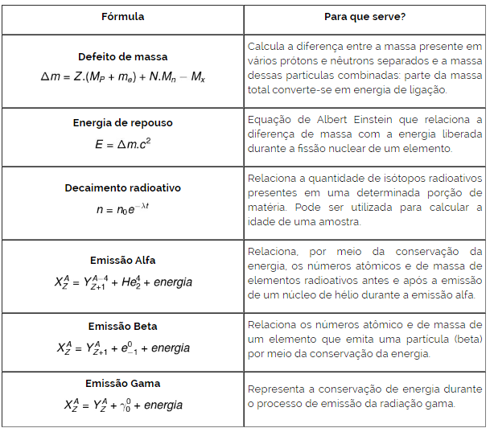

Sumário
Física Nuclear
Introdução
A física nuclear é a área da física que estuda as interações
dos núcleos atômicos. Algumas aplicações como, por exemplo, energia nuclear e
tecnologia de armas nucleares, medicina, engenharia de materiais e muitos
outros, são algumas das aplicações.
Alguns fenômenos físicos relativos aos núcleos atômicos,
como transições de energia, decaimento radioativo, fissão e fusão nuclear, são
estudados por essa área.

A fissão nuclear é uma reação em cadeia que ocorre quando um núcleo atômico pesado captura um nêutron lento.
História da Física Nuclear - descobertas dos elétrons, prótons e nêutrons
A história da física nuclear como uma disciplina distinta da física atômica
começa com a descoberta da radioatividade por Henri Becquerel em 1896.
A descoberta do electrão (partícula subatômica) por Joseph John Thomson
um ano depois (1897). Na virada do século XX, o modelo atômico aceito era
de J.J Thomson - a teoria sobre a estrutura atômica proposta por Joseph
John Thomson, descobridor do elétron e da relação entre a carga e a massa
do elétron, antes do descobrimento do próton ou do nêutron - e ainda, na
virada do século, foi descoberta três tipos de radiação que emana dos átomos,
Beta, Alfa e gama.

Henri Becquerel.
Rutherford, um dos nomes a que é atribuída a descoberta do próton, no início do século XX. Em 1919, o mesmo, junto com alguns de seus colaboradores realizaram um experimento, que consiste em: bombear o gás nitrogênio com partículas alfa com muita energia, e como resultado se obtia que alguns núcleos de hidrogênio eram detectados. Neste processo o nitrogênio era transmutado em oxigênio - a transmutação química artificial ocorre quando núcleos estáveis de elementos naturais são bombardeados com diferentes partículas (alfa, beta, próton, nêutrons, etc.), transformando-se em núcleos de outro elemento químico - através de uma reação nuclear. Rutherford concluiu então que se tratava de uma partícula presente nos núcleos de todos os átomos: o núcleo atômico é formado por prótons. Contudo questões importantes estavam sem resposta, como: Qual o número de prótons e qual a sua influência na massa do átomo; e como eles conseguem ficar em um espaço pequeno, como o núcleo, pois, de acordo com a Lei de Coulomb - é uma lei da física que descreve a interação eletrostática entre partículas eletricamente carregadas -, a força de repulsão entre essas partículas seria muito grande.

Rutherford na Universidade McGill em 1905.
James Chadwick detectou os nêutrons após bombardear berílio com radiação alfa havia a liberação de outra radiação, porém esta sem carga elétrica, semelhante a radiação gama. Após vários estudos concluiu que a radiação emitida na verdade era um feixe de partículas neutras com massa igual a de um próton. James recebeu um Nobel de física por esta descoberta.

James Chadwick.
Hoje temos a informação que o núcleo atômico é composto de prótons e nêutrons conhecidos como núcleos. O número de prótons e nêutrons no núcleo é o seu número de massa (A) e o número de prótons é o seu número atômico (Z).
Grandes nomes que fizeram parte da história e alguma de suas contribuições mais memoráveis
- Henri Becquerel - Foi um dos principais responsáveis pela descoberta da radioatividade.
- Ernest Rutherford - Conhecido como pai da física nuclear, Rutherford descobriu as partículas Alfa e Beta, no campo da radioatividade.
- Marie Curie e seu esposo, Pierre Curie - Dentre as muitas contribuições para a Física uma delas é a descoberta de dois novos elementos radioativos (rádio e polônio) e também propuseram o termo “Radioatividade”.
- Eugene Marsden e Hans Geiger - Realizaram um experimento utilizando folhas de ouro bombardeando-as com partículas alfa, para indicar a grande densidade de um núcleo atômico.
-
Paul Dirac - Elaborou a equação de Dirac e previu a existência da Antimatéria - pode-se pensar como uma imagem espelhada da matéria, com carga elétrica oposta
Vídeo aula indicada sobre física quântica - Equação de Dirac e a Teoria Quântica de Campos
- Enrico Fermi - Propôs a ideia que no decaimento radioativo beta ocorria a emissão de partículas neutras, que foram batizadas, por ele, de neutrinos. - Também explicadas na vídeo aula
- Carl Anderson - Detectou, e confirmou a ideia de Dirac, a existência de uma antimatéria do elétron, o pósitron. - Também explicadas na vídeo aula
- Hideki Yukawa - O Físico propôs que os prótons e nêutrons presentes no núcleo atômico são ligados por uma força nuclear muito forte, mais forte que a própria repulsão elétrica.
- Otto Hahn e Lise Meitner - Descobriram a fissão nuclear
- Enrico Fermi - Foi o principal cientista responsável pelo projeto manhattan, no qual sua intenção era produzir uma reação nuclear em cadeia.
Física Nuclear na saúde
O avanço da física nuclear têm possibilitado, por meio da
medicina nuclear - a medicina nuclear é uma especialidade médica que realiza
diagnóstico e terapia através da radiação emitida por elementos radioativos -
o surgimento de tecnologias que impactam à saúde humana. Exames de imagem
utilizando radiação e partículas (raio x, tomografia, ressonância magnética)
e o tratamento de tumores, como câncer, por meio da radiação são alguns
exemplos de impactos da física nuclear.
O tratamento de câncer tornou um método buscado por muitos
médicos, já que têm menos efeitos colaterais e o tratamento é capaz de destruir o
tecido afetado pelo câncer por meio de emissão de prótons, nêutrons e íons pesados.

Máquina de tomografia feita com os avanços da Física Nuclear - Link da Imagem
Física Nuclear e meio ambiente
A Física Nuclear também é aplicada aos estudos do
meio ambiente - datação dos núcleos radioativos presentes nas rochas e no solo
- por exemplo, é de extrema importância para a determinação do passado da
Terra e para a definição de padrões climáticos. A atmosfera terrestre é
constantemente bombardeada por raios cósmicos altamente energéticos, cujas
interações com as moléculas de carbono presentes no ar produzem o isótopo
carbono-14. Esse elemento raro tem uma meia vida extremamente longa: a cada
5700 anos, o número desse tipo de radioisótopo presente em seres vivos, como
plantas e animais, cai pela metade. Dessa forma, é possível estudar a idade
de fósseis e, até mesmo, determinar a época em que grandes florestas ou
ecossistemas inteiros deixaram de viver.

Esquema para visualizar a Física Nuclear no meio Ambiente
Produção de energia elétrica
A produção de energia elétrica por meio de reatores
nucleares vem crescendo no mundo todo. A energia é gerada utilizando fissão
nuclear - divisão de um núcleo atômico pesado e instável (gera uma energia muito
grande quando ocorre essa divisão) - a energia também poderia ser gerada a partir de
fusão nuclear - junção de um ou mais núcleos atômicos (gera uma energia muito maior
que a fissão nuclear) -, porém não é utilizada pois a energia gasta para juntar dois
núcleos seria muito maior do que a energia gerada, e também a temperatura durante a fusão
seria muito alta, cerca de 100 milhões de graus celsius. A geração de energia por meio de
fissão nuclear normalmente é descontrolada (no caso das bombas atômicas), mas os reatores
são responsáveis pelo controle dessa reação. Isso acontece pois o reator é montado de
maneira estratégica, intercalando barras de combustível físsil (Urânio enriquecido) com
barras que moderam nêutrons (carbono na forma de grafite). Nos reatores mais modernos é
usada a água pesada (água com bromo). Parte dos nêutrons liberados na fissão é contido
por essas barras, por isso uma reação controlada. Com isso ocorre a liberação de energia
em forma de calor, que é trocado com a água de primeiro setor (água que entra em contato
com o combustível físsil), e essa água de primeiro setor troca o calor com a água de
segundo setor (água que não entra em contato com o material radioativo nem com a água do
primeiro setor. Essa água de segundo setor que vai evaporar e mover uma turbina para
ocorrer a geração de energia.

Funcionamento de um Reator Nuclear
Fórmulas utilizadas pela Física Nuclear

Tabela 1 das Fórmulas da Física Nuclear

Tabela 2 das Fórmulas da Física Nuclear

Tabela 3 das Fórmulas da Física Nuclear
Refêrencias
Brasil Escola - Física Nuclear
Vídeo Youtube - Fissão e Fusão
Instituto Vencer O Câncer Avanços da Medicina com Física Nuclear